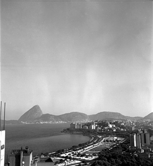
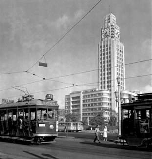
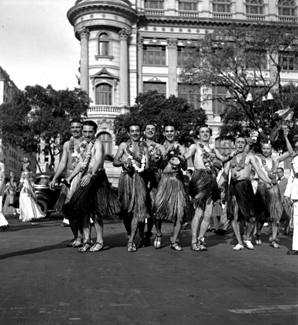
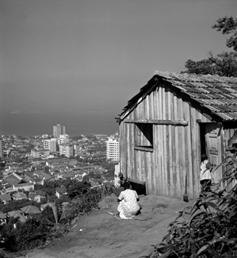
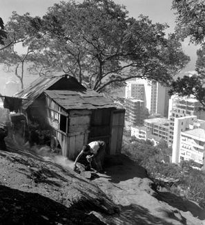
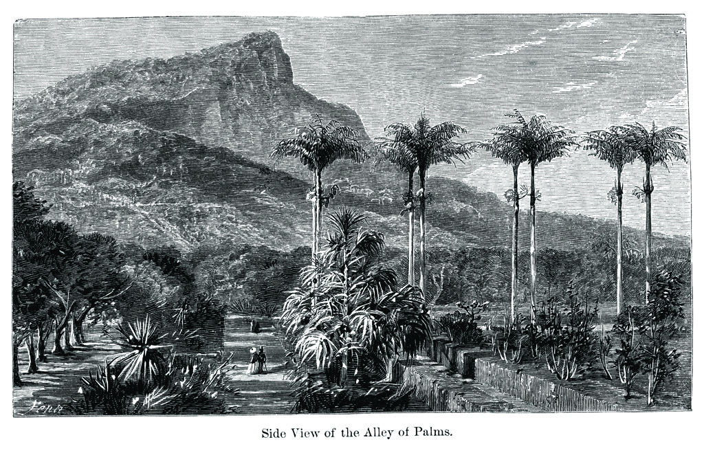

Sobre o Rio Antigo
Nesta página são apresentadas algumas imagens do Rio antigo na década
de 40.
As fotos são de Pierre Verger , o fotógrafo francês que se apaixonou pela Bahia e mudou para o Brasil para estudar os ritos afro-brasileiros.
Ele esteve em São Paulo e no Rio de Janeiro nos anos 40 e em várias outras ocasiões, quando tirou as fotos que expostas nesta página.
As fotos são de Pierre Verger , o fotógrafo francês que se apaixonou pela Bahia e mudou para o Brasil para estudar os ritos afro-brasileiros.
Ele esteve em São Paulo e no Rio de Janeiro nos anos 40 e em várias outras ocasiões, quando tirou as fotos que expostas nesta página.
| Fotos do Rio Antigo | ||||||||
|---|---|---|---|---|---|---|---|---|
Aterro do FlamengoEsta foto representa a Aterro do Flamengo nos anos 40.  |
Praia do FlamengoEsta foto representa a Praia do Flamengo nos anos 40. 
|
CopacabanaEsta foto representa a Praia de Copacabana nos anos 40. 
|
||||||
CopacabanaEsta foto representa a Copacabana nos anos 40. 
|
Central do BrasilEsta foto representa a Central do Brasil nos anos 40. 
|
Teatro MunicipalEsta foto representa o Teatro Municipal nos anos 40. 
|
CarnavalEsta foto representa o Carnaval nos anos 40. 
|
CarnavalEsta foto também representa o Carnaval nos anos 40. 
|
Vista ChinesaEsta foto representa a Vista Chinesa nos anos 40. 
|
FavelaEsta foto representa o Carnaval nos anos 40. 
|
FavelaEsta foto também representa o Carnaval nos anos 40. 
|
Jardim BotânicoEsta foto representa a Vista Chinesa nos anos 40.  |